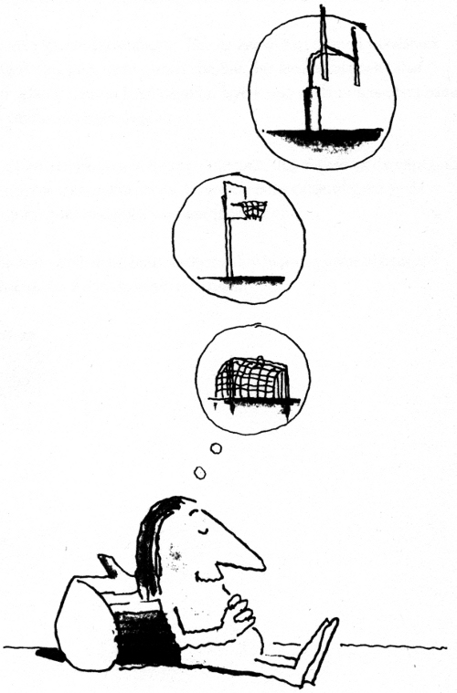

Dostum bana tek bir fikre sahipmiş gibi gözüküyor: Yanlış fikre.
Samuel Johnson
Herkes, en azından yılda bir kere dâhi olur; gerçek dâhi ise birbirlerine yakın özgün fikirleri olandır.
G. C. Lichtenberg
İnsanoğlu, birkaç dakika havasız yaşayabilir, susuz iki hafta, besinsiz iki ay dayanabilir; ve yeni bir fikri olmadan yıllarca, ta ölene kadar yaşayabilir.
Kent Ruth
Fiziksel bir nesne olan beyninizin, fiziksel olmayan bir nesneyi yani fikri nasıl ürettiğini anlayan birisi (henüz) ortaya çıkmadı.
Bütün bildiğimiz bunun olup bittiğinden ibarettir. Belki bu size, başkalarından daha seyrek oluyordur, ama birkaç kere olduğuna göre, fikir yakalamanızı engelleyecek hiçbir fiziksel yetersizlik -örneğin beyninizde herhangi bir genetik başkalaşım- olmadığını biliyoruz.
Bu zaten kanıtlanmıştır.
Açıklık kazandırmak istediğimiz tek şey, neden bunun size sadece birkaç kere olduğu ve ondan sonra da daha fazlası için oturup çalışmanız gerektiği.
Çocukluğumda, Johny-Bob Boyd adlı bir delikanlıyla takılırdım.
JB sakar biriydi. Sanki kazalar hep onu bulurdu; eğer kaza ona gelmiyorsa, o kazaya koşar adım giderdi. Bugünlerde psikologlar, JB gibilerinin bilinçaltından kazalara yol açtıklarını söylüyorlar, yani birilerinin dikkatini çekmek için.
O zamanlar biz ona “kaza yatkını” deyip geçerdik.
Büyüdükten sonra, “fikir yatkını” insanlarla takılmaya başladım.
Tıpkı kazaların JB’yi bulduğu gibi, sanki fikirler de hep gelip onları buluyordu. Ve tabii psikologlar, bir zamanlar JB için söylemeleri gereken şeylerin aynısını, büyük olasılıkla onlar için de söylerlerdi: Bilinçaltları onları fikir yakalamaya itiyor, birilerinin dikkatini çekmek için.
Kim bilir, belki de öyledir. Ama ben, bundan daha fazlası olduğuna inanıyorum. James Webb Young, yeryüzünde iki ana insan tipi olduğuna ve bunların da “Spekülatörler” ve “Hazır Yiyiciler” olduğuna inanan Pareto’ya göndermeler yapar.
Pareto, Spekülatörlerin yeni bileşim olasılıklarını kesinlikle önceden kestirebildiklerini söyler. Bu tipler, Young’ın belirttiği üzere,
“Her alanda...işleri oluruna bırakmayıp da nasıl değişeceği konusunda spekülasyon yaratanlardır.”
Öte yandan, Hazır Yiyiciler ise “Rutin, işleri oluruna bırakan, hayal gücünden yoksun, tutucu insanlardır ve Spekülatörler tarafından kullanılırlar.”
Young, bu iki tip insanın varlığı konusunda Pareto ile aynı görüştedir.
Ve ekler, “Hiçbir tekniğin fikir üretmelerine yardımcı olamayacağı insan sayısı son derece fazladır”. Ben, buna katılmıyorum.
Birlikte olduğum fikir yatkını insanların ne fikir üreticilik gibi bir yetenekle doğduklarını, ne kendilerini taşsız yollara sokacak eşsiz bir düşünme tekniğine sahip olduklarını, ne de diğerlerinin sadece kaos olarak gördükleri ortam ve ilişkilere girmelerini sağlayacak lazer keskinliğinde sezgileri olduğunu sanmıyorum.
Onları farklı kılan olgu şu: Fikirleri yakalayanlar, o fikirlerin var olduğunu bilirler ve onları bulabileceklerini de bilirler.
İzninizle yineleyeyim: Fikirleri yakalayanlar, o fikirlerin var olduğunu bilirler ve onları bulabileceklerini de bilirler; fikir yakalayamayanlar ise, o fikirlerin var olduğunu bilmezler ve onları bulabileceklerini de bilmezler.
FİKİRLERİN VAR OLDUĞUNU BİLİN
Ders vermeye ilk başladığımda, öğrencilerime her sorunun bir çözümü, yanıtı ya da fikri olduğunu söylerdim.
Yanılıyordum.
Bugün artık biliyorum ki, yüzlerce çözüm, yüzlerce yanıt ve yüzlerce fikir var. Belki de binlerce. Hatta, işin aslına bakarsanız bu sonsuz bile olabilir.
Düşünün bir:
1940 itibarıyla (son sayım o zaman yapılmış) tıraş kabı için tam 94 ayrı patent alınmış. Tıraş kabı, inanabiliyor musunuz!
Amerika Birleşik Devletleri’nde yayımlanan yemek kitapları, küçük bir kitaplığı dolduracak kadar çok.
Ya da Lincold Steffens’ın 1931’de yazdıklarına bir bakın:
Hiçbir şey yapılmadı. Dünyada var olan ne varsa yapılıyor ya da yapılacak.
En güzel resim henüz yapılmadı, en büyük oyun yazılmadı, en görkemli şiir okunmadı.
Yeryüzünde ne mükemmel bir demiryolu var, ne kusursuz bir hükümet, ne de uygulanan yasalar.
Fizik, matematik ve en gelişmiş ve en doğru bilim, temelden değiştiriliyor. Kimyanın bilim sayılması o kadar yeni ki; psikoloji, ekonomi ve sosyoloji çalışmalarıyla,
Einstein’ın doğmasını sağlayacak bir Darwin bekliyorlar.
Okullarımızdaki parlak çocuklara, bütün bunlar anlatılabilse, belki hepsi futbol, parti ya da hak edilmemiş mevkilerin uzmanı olup çıkmayacak. Ama anlatılmıyor, buna karşılık; onlara sadece bilinenleri öğrenmeleri gerektiği söyleniyor.
Bu hiçbir şey değildir.
Bütün söyledikleri bugün de en az 1931’deki kadar geçerlidir.
Hiçbir şey yapılmadı. Her şey, yapılabilmek için sizleri bekliyor.
Gelin size bir öykü daha anlatayım:
Yirmi yılı aşkın bir süre, bir reklam ajansında çalıştım ve Smokey Bear’ın reklamlarını yaptım. Metin yazarları ve sanat yönetmenlerinin her yıl yaptıkları ilk iş, bir ana poster hazırlamaktır. Posterin kuralları asla çeşitlenmez: Belirli bir şekil ve büyüklükte olmalıdır; Smokey’i canlandıran bir görselliği olmalıdır; bir bakışta anlaşılacak ve bir budalanın bile anlayabileceği kadar açık olmalıdır ve (eğer sözcük kullanılmışsa) üç ya da dört saniyede okunabilecek kadar kısa olmalıdır.
Posterin işlevi de asla değişmez: İnsanları ateşe karşı uyarır.
Diğer bir deyişle, bizler her yıl aynı şeyi sadece biraz daha farklı sunmak zorundaydık.
Bunu da başardık. Gerçekten de her yıl, poster için 20-30 farklı fikir ürettik. Yirmi yılı aşkın bir süre boyunca, her yıl. Yani her biri Smokey’i tanıtan ve aynı şeyi anlatıp da hiç biri aynı olmayan 500’den fazla poster.
Bildiğim kadarıyla, o ajanstaki metin yazarları ile sanat yönetmenleri, hâlâ Smokey posterleri için aynı işlevleri ve aynı kuralları uyguluyorlar ve hâlâ her yıl yeni fikirler getiriyorlar.
Bu nedenle, sakın bana bir sorunu çözmenin bir ya da iki yolu olduğunu söylemeyin. Çünkü, ben öyle olmadığını biliyorum.
Ya da dilerseniz, bir arkadaşımın öyküsünü de anlatabilirim:
Bir dönem Chicago’da üç günlük bir reklamcılık semineri veriyordum.
Her öğrenciden istediğim şey, Swiss Army çakısı için gece boyu çalışarak bir açık hava reklamı yaratmalarıydı. Öğrencilerin çoğu, ertesi sabah istenen reklamla gelirdi, ama bazıları saatlerce çalıştıklarını, gene de bir şey üretemediklerini söylerdi. Üç yıl boyunca bu hep böyle gitti.
Dördüncü yıl, farklı bir şey denedim. Tek bir açıkhava reklamı istemek yerine, her öğrencinin Swiss Army çakısı için en az onar reklam üretmesini istedim. Ayrıca, onlara bir gece vermek yerine bu işi, hemen o gün öğlen yemeği arasında yapmaları gerektiğini söyledim.
Yemek arası bittiğinde, hepsinin elinde en az on tane reklam vardı.
Bir öğrenci, tam 25 tane yapmıştı.
O anda, bir sorunla karşılaştığında çoğu insanın, sadece tek bir doğru çözüm olduğunu düşündüğünü, çünkü kendisine böyle öğretilmiş olduğunu kavradım. Bütün okul yaşamları boyunca, çok seçenekli ve doğru ya da yanlış karşılıklı sorularla karşılaşıyorlardı ve tüm bu soruların yalnızca bir tek doğru yanıtı oluyordu.
Ayrıca, bütün soru ve sorunların aynı bunlara benzediği inancına kapılmışlardı. Mükemmel gözüken bir çözüm bulamadıklarında her şeyi yüzüstü bırakıyorlardı.
Ne var ki çoğu sorun, okullardaki sınav sorularına benzemez.
Çoğu sorunun birçok çözümü vardır. Öğrencilerimi bunu kavramaya zorlar zorlamaz, bu çözümleri bulmuşlardı.
Hiç böyle bir şey duydunuz mu? Öğrenciler, birden çok çözüm olduğunu kavrar kavramaz, bu çözümleri bulmuşlardı.
“Daima, yapacağınız işin kolay olduğunu düşünün, öyle olduğunu göreceksiniz” der Émile Coué.
Bir yanıtın olmadığını düşünecek olursanız, onu bulmanız da zor olur.
Birçok yanıt olduğunu bilirseniz, bir ya da ikisini bulmanız kolaylaşır.
Dr. Norbert Wiener da aynı şeyi fark etmiş: “Bir bilimci, çözümü olduğunu bildiği bir soruna saldırdığında, bütün davranışları değişir. Daha başlangıçta, çözüme giden yolun yüzde ellisini aşmış gibidir.”
Arthur Koestler de aynı görüşte: “Sorunun çözülebilirliği konusundaki azıcık bilgi bile, oyunun baştan kazanılması anlamına gelir.”
Bazı insanların her zaman fikirlerle dolu olmasının nedenlerinden biri de budur. Fikirlerin oralarda bir yerlerde olduğunu bilirler.
Bir gün büromda, bu kitabın çizeri Larry Corby ile birlikte, çocuk oyuncakları hakkında bir TV reklamı hazırlamak için çalışıyorduk.
“Kapıyı kapat” dedi Larry.
“Neden?”
“Odanın bir yerlerinde fikirler dolanıyor ve onların dışarı kaçmasını istemiyorum.”
Şaka yapmıyordu. Aradığımız fikirlerin odanın bir yerlerinde olduğuna gerçekten de inanıyordu. Böyle olduğunu düşünmemizden beş dakika sonra da birkaç tanesini yakalayıverdi! Joseph Haller de aynı şeye inanıyordu, “Çevremdeki havada fikirlerin uçuştuğunu ve kendilerini bulmam için beni seçtiklerini hissediyordum” demişti.
Ve tabii Edison. İnanıyordu ki -hayır biliyordu ki- fikirler “havadadır”. Eğer o yakalayamayacak olsaydı, başkası yakalayacaktı. Birçoğunu yakalayanın o olmasının başka açıklaması olabilir mi?
Her zaman için başka bir çözüm ve başka bir fikir vardır.
Bunu kabul edin.
BU FİKİRLERİ BULACAĞINIZI BİLİN
Sorununuzun yüzlerce çözümü olduğunu, fikirlerin çevrenizde dolandıklarını biliyorsunuz (umarım), peki o zaman neden onları bulup yakalamıyorsunuz?
Şu üç olayı değerlendirin:
1. Bunun her zaman olduğunu görürsünüz: Adını bile duymadığınız bir golfçü, büyük bir turnuvanın daha ilk günü liderliği ele geçirmiştir. Gazeteler, onun hakkında yazılarla doludur. Herkes ondan söz etmektedir. O yeni bir Palmer ya da Nicklaus’tur.
Ertesi gün, zavallı adam bir sürü deliği ıskalar ve yok olup gider.
Ne olmuştur?
2. Bir keresinde Los Angeles Forum’da ben bir köşede bir reklam filmi çekerken, öteki köşede Wilt Chamberlain faul atışı çalışması yapıyordu. Topları toplayıp kendisine getiren üç çocuk vardı. Ben orada olduğum sürece en azından 100 atış yaptı ve sadece üçünü kaçırdığını gördüm. Vay, vay, vay! Müthişti. Aynı geceki maçta 12 faul atışından sekizini kaçırdığına tanık oldum..
Ne olmuştu?
3. Kent dışında bir konuşma yapacaksınız ve bunu serinkanlılıkla bekliyorsunuz. Konunuzu biliyorsunuz, ne söylemek istediğinizi biliyorsunuz, bunları nasıl söyleyeceğinizi de biliyorsunuz. Bundan iyisi can sağlığı. Aynanın karşısına geçip prova yapıyorsunuz. Kusursuz, 10 üzerinden 10’luk. Fakat tam kürsüye çıktığınızda bütün her şey kafanızdan uçup gidiyor ve konuşmanız tam bir felakete dönüşüyor.
Ne oldu?
Ne olduğunu biliyorsunuz.
Söylemenin farklı yolları var, ama asıl olarak siz, Wilt ve unutulup giden o golfçü -bilinçli ya da bilinçsiz olarak- üçünüz de işe kendinizden kuşku duyarak başlamıştınız. Gerisi boş laf.
Golfçü ilk gün, Wilt antrenmanda ve siz de oteldeki odanızda üzerinize düşeni başaracağınızdan emin olmanın rahatlığı içindeydiniz.
Ne var ki sonra her nedense, düşündüğünüz kadar iyi olup olmadığınızdan kuşku duymaya başladınız. Golf çalışmasında, antrenmanda ve oteldeki performanslarınız, kendiniz hakkındaki beyinsel imajlarınızdan daha iyiydi.
Böylelikle de bedeniniz ve beyininiz, otomatik olarak performansınızı, yeniden rahat edeceğiniz düzeye düşürdüler.
Bunun sonucunda da, hiçbir irade, çaba, antrenman ya da kararlılık, performansınızı eski düzeyine çıkartamaz. Bunun nedeni, kendinize bakış açınızın, ne olduğunuzu ve nasıl bir performans göstereceğinizi belirlemesidir. Hiçbir çaba ve istek değil, sadece kendinize bakışınız.
Bu nedenle, performansınızı yükseltmenin tek yolu, kendinize bakış açınızı geliştirmekten geçer.
Şimdi, eğer fikir yatkını olmak istiyorsanız, iki şeyi baştan kabul etmelisiniz.
Birincisi, kendiniz hakkındaki düşünceleriniz, başarınızın tek ve en önemli öğesidir.
Kişiliğiniz, davranışlarınız, diğerleriyle ilişkileriniz, işteki verimliliğiniz, duygularınız, yetenekleriniz ve becerileriniz -kontrol dışı olarak- kendi kendinizi nasıl gördüğünüzden etkilenir.
Bütün yapacağınız, olduğunuzu düşündüğünüz insan gibi davranmaktan ibarettir. İşte bu kadar basit.
Bunu tartışmak bile gereksiz.
Eğer kendinizi başarısız görüyorsanız, başarısızlığa uğramanız olasıdır. Yok eğer başarılı görüyorsanız, o zaman da başarı kazanmanız olasıdır.
Yoksa görünürde başarısız gözükenlerin başarılı olup da, başarılı gözükenlerin başarısızlığa uğramalarını başka nasıl açıklayabilirsiniz?
“Başarabiliyorlar, çünkü başarabileceklerini düşünüyorlar” der Virgil. Zafer hakkındaki özgüvene dayanan bu temel öğe, bugün de 2000 yıl önceki kadar geçerlidir.
Henry Ford da aynı fikirde: “İster yapabileceğinizi, ister yapamayacağınızı düşünün, haklısınız.”
Kısacası: Davranış, gerçeklerden daha önemlidir.
Bunun özgün anlamı, fikirlerle dolup taşan insanlarla, içlerindeki yeteneği fikre dönüştüremeyen insanlar arasındaki farkın önemli bir kısmının bu olmasıdır. Bütün yapmaları gereken, yapabileceklerine inanmalarıdır.
Yapabileceğine inananlar, yapabilir; inanmayanlar ise yapamaz.
İşte bu kadar.
İkincisi, William James’in “neslimizin en büyük buluşu” olarak adlandırdığının bir gerçek olduğuna inanmalısınız. Buluş ne mi?
İnsanoğlu, yaşam düzeyini ve davranışlarını değiştirerek değişir.
Jean-Paul Sartre da şöyle dile getiriyor: “İnsan, kendini nasıl görüyorsa öyledir.”
Çehov ise şöyle der: “İnsan, inandığıdır.”
Daha fazla söze gerek yok.
Ama gene de çoğu insan, belki siz bile, kabul etmeyi reddediyorsunuz.
Kendinize bakış açınızın, yaşamınızı sürüklediğini kabul ediyorsunuz ama; bilgelerin, ebeveynlerin, kilisenin, doktorların, ozanların, araştırmacıların, düşünürlerin, psikologların, öğretmenlerin, terapistlerin, antrenörlerin ve yüzlerce kitaba konu olmuş binlerce gerçek yaşam deneyiminin sunduğu bütün kanıtlara rağmen, kendi özgüveninizi değiştirebileceğinizi reddediyorsunuz.
Yanılıyorsunuz, değiştirebilirsiniz.
Kabul edersiniz ki, “İnsan, yüreğinde kendini ne hissediyorsa odur.” Ama gene de eğer yüreğinizde farklı hissetseniz de gene aynı insan olacağınıza inanıyormuş gibisiniz.
Olamazsınız. Kendinizden farklı biri olursunuz.
Ya da yüreğinizde farklı düşünemeyeceğinizi, bugünkü bu düşüncenizin sizi sonsuza kadar taşa dönüştüreceğini sanıyorsunuz.
Yanılıyorsunuz. Farklı düşünebilirsiniz.
Artık herkes, beynin, bedenin çalışma niteliğini değiştirdiğini kabul ediyor. Bunu yapabileceğinin ve zaten yapmakta olduğunun kanıtı inanılmayacak kadar çok.
Uyuşturucu bağımlıları, aslında etkisi olmayan avutucu ilaçlar alıyor ve hiçbir yoksunluk belirtisi göstermiyorlar, alerji çekenler plastik çiçeklerle avunuyor, yüksek tansiyon ve yüksek nabzı olanlar düşünce yoluyla bunları düşürüyor, sevilmeyen çocuklar psişik olarak büyümelerini durduruyor, kanser hastaları ansızın iyileşmeye başlıyor, umarsız kötürümler Lourdes’den yürüyerek çıkıyorlar...
Dünya kadar örnek var.
Fakat düşündüğünüzde, tek bir şeyin (beynin) başka bir şeyi değiştirdiği (beden) kavramını kabul etmek, devasa bir adım, müthiş bir adım, hatta belki de değişmez niceliklerle (kuantum) ölçülebilecek bir adım. Sizden bütün istediğim küçük bir adımı kabul etmeniz; beynin beyni değiştirebileceğini.
Kabul edin. Çünkü gerçek bu.
Ardından özgüveninizi değiştirmeye başlayın.
Bu kitabın bunu anlatacağını düşünmüyorum, sadece şunu söyleyebilirim: Eğer kendinize “asla fikir üretmediğinizi” söylerseniz, asla üretemezsiniz.
Tersine, her gün kendi kendinize, fikirlerle dolduğunuzu, fikirlerin kafanızdan tıpkı suyun pınardan fışkırdığı gibi fışkırdığını söyleyin. Her gün. Hayır, gün boyunca yineleyip durmanıza gerek yok. Çok geçmeden, yarattığınız bu yeni beyinsel görüntünüze göre yaşamaya başlayacaksınız.
Kuşkusuz kitaplıklar ve kitapçı dükkânları, özgüveninizi nasıl değiştireceğinizi sizlere benden daha iyi anlatacak kitaplarla dolu: The Magic Believing (Büyülü İnanç); Change Your Life Now (Yaşamınızı Şimdi Değiştirin); Psycho-Cybernetics (Psiko-Sibernetik);
Think and Grow Rich (Düşünün ve Zengin Büyüyün); The Power of Positive Thinking (Olumlu Düşünmenin Gücü); Life’s Too Short (Yaşam Çok Kısa), Unlimited Power (Sınırsız Güç)... Liste uzayıp gidiyor.
Birini alın ve okuyun.
Herkes temelde aynı şeyi söylüyor. Kendi hakkınızdaki düşüncelerinizi değiştirmekle, yaşamınızı da değiştirebilirsiniz.
Ve bunu söyleyenlerin hepsi de yerden göğe kadar haklı.
Kabul edin.
Bir kere fikirlerin var olduğuna ve onları bulacağınıza inanırsanız, büyük bir dinginliğe bürünürsünüz. Bu, bugün sizin her zamankinden daha çok gereksinim duyduğunuz dinginliktir.
Nedeni mi?
Bugün, bu yola gireceğinizi düşünmemiştiniz de ondan.
Bilgisayarlar, fakslar, modemler, e-posta, sesli posta, şebekeler ve internet hepsi de yaşamlarımızı daha yalın ve daha kolay hale getirmeyi amaçlıyor. Bizlerin de fikir üretmek için daha fazla zamanımız olduğu varsayılıyor.
Ne var ki çoğu için -belki sizin için de- yaşanan bunun tam tersi. Zamandaki bu daralma, aslında elektronik aletlerin yarattığı zamanı çalıyor. Öyle gözüküyor ki, yapabileceğinizin iki katını yapmak için daha az zamanınız kalıyor.
Durun, sakin olun. Fikrin dışarılarda bir yerlerde olduğunu biliyorsunuz. Onu bulup yakalayacağınızı da biliyorsunuz.
Zaman için endişelenmeyin. Her ne kadar bazı fikirleri yakalamak diğerlerine göre uzun zaman alsa bile, bir fikri yakalamak tuhaf bir şekilde zamana bağlı değildir. İşyerlerine ya da programlara hatta iş yüküne de bağlı değildir.
Bir fikri yemek yerken de arayabilirsiniz, duş alırken ya da köpeğinizi yürüyüşe çıkarttığınızda da. Hatta arabanızı çalıştırdığınız ya da ışığı açtığınız anda bile yakalayabilirsiniz onu.
Bir fikri yakalamak, onun varlığına duyduğunuz inanca bağlıdır. Üstelik, bu inanç da kendi içinizdedir.
İnanın.
